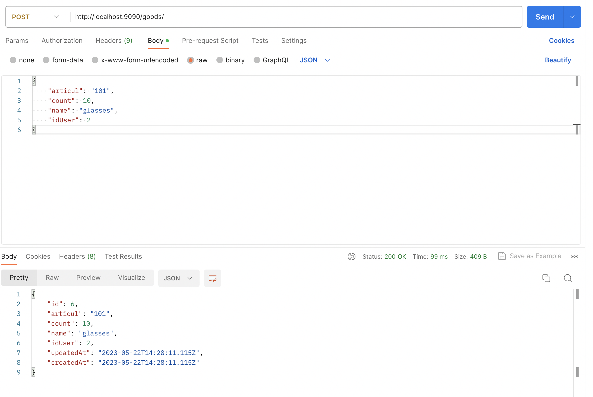
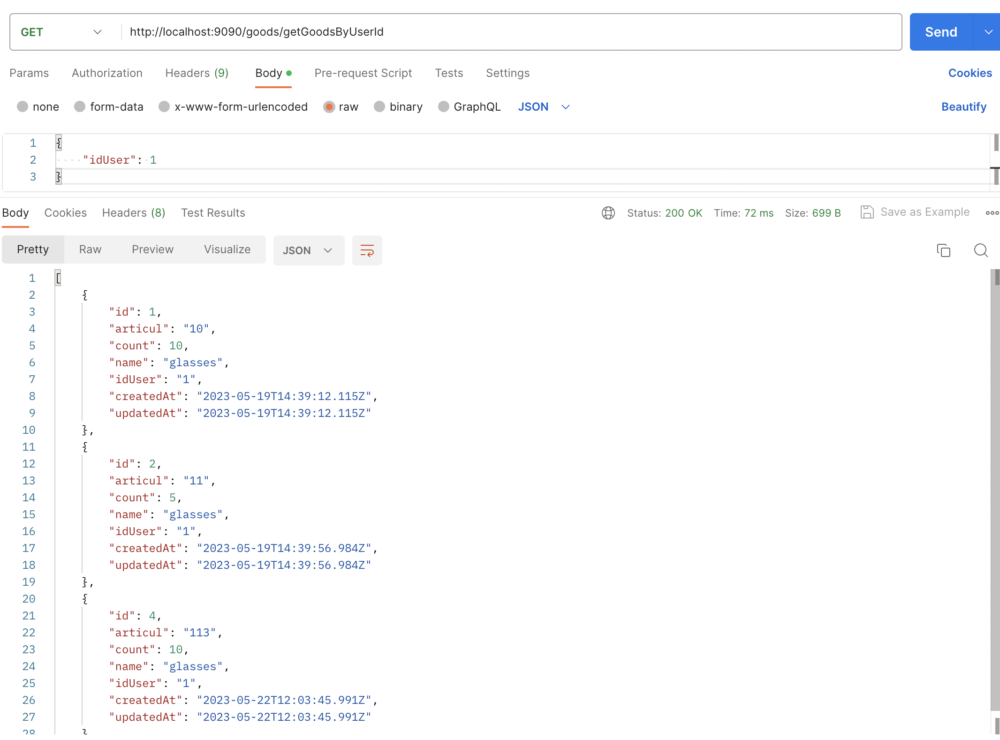

Лабораторная работа № 3
Описание:
Необходимо реализовать отдельный микросервис, выполняющий какую-либо содержательную функцию из всего арсенала функций вашего приложения.
Ход работы
В данной работе сделан отдельный микросервис по работе с товарами магазина. Через gateway можно сделать CRUD операции, для мнимой связи двух баз данных используется id того пользователя, который взаимодействует с системой. Данный id передается в теле запроса.
Структура проекта
.
├── gateway
│ ├── Makefile
│ ├── index.js
│ ├── node_modules
│ ├── package-lock.json
│ └── package.json
├── main app
│ ├── Makefile
│ ├── db.sqlite
│ ├── node_modules
│ ├── nodemon.json
│ ├── package-lock.json
│ ├── package.json
│ ├── src
│ └── tsconfig.json
└── microservice
├── Makefile
├── db.sqlite
├── node_modules
├── nodemon.json
├── package-lock.json
├── package.json
├── src
└── tsconfig.json
Microservice
Route
import express from "express";
import GoodsController from "../../../controllers/goods/Goods";
const router: express.Router = express.Router();
const controller: GoodsController = new GoodsController();
router.route('/').post(controller.create);
router.route('/countGoods').get(controller.getCountGoods);
router.route('/getGoodsByUserId').get(controller.getGoodsByUserId);
router.route('/:id')
.get(controller.get)
.patch(controller.update)
.delete(controller.delete);
export default router;
controllers
import GoodsService from '../../services/goods/Goods'
class GoodsController {
private goodsService: GoodsService
constructor() {
this.goodsService = new GoodsService()
}
get = async (request: any, response: any) => {
try {
const goods = await this.goodsService.getById(
Number(request.params.id)
)
response.send(goods)
} catch (error: any) {
response.status(404).send({ "error": "error" })
}
}
create = async (request: any, response: any) => {
const { body } = request
try {
const goods = await this.goodsService.create(body)
response.status(200).send(goods)
} catch (error: any) {
response.status(400).send({ "error": "error" })
}
}
update = async (request: any, response: any) => {
const { body } = request
const id = Number(request.params.id)
try {
const goods = await this.goodsService.update(id, body)
response.send(goods)
} catch (error: any) {
response.status(400).send({ "error": "error" })
}
}
delete = async (request: any, response: any) => {
const id = Number(request.params.id)
try {
await this.goodsService.delete(id)
response.status(200).send({ message: `Goods with id ${id} has been deleted` })
} catch (error: any) {
response.status(400).send({ "error": "error" })
}
}
getCountGoods = async (request: any, response: any) => {
try {
const goods = await this.goodsService.getCountGoods()
response.send(goods)
} catch (error: any) {
response.status(404).send({ "error": "error" })
}
}
getGoodsByUserId = async (request: any, response: any) => {
try {
const { idUser } = request.body;
const goods = await this.goodsService.find(Number(idUser));
response.send(goods);
} catch (error: any) {
response.status(404).send({ error: "error" });
}
}
}
export default GoodsController
Gateway
index.js
const express = require('express');
const axios = require('axios');
const app = express();
const port = 3000;
app.use(express.json());
app.all('/goods/*', async (req, res) => {
const url = `http://localhost:9091${req.originalUrl}`;
try {
const response = await axios({
method: req.method,
url,
data: req.body,
});
res.status(response.status).send(response.data);
} catch (error) {
if (error.response) {
res.status(error.response.status).send(error.response.data);
} else {
res.status(500).send('Internal Server Error');
}
}
});
app.listen(port, () => {
console.log(`Gateway listening at http://localhost:${port}`);
});
Main app
route
import express from "express"
import GoodsController from "../../../controllers/goods/Goods"
const router: express.Router = express.Router()
const controller: GoodsController = new GoodsController()
router.route('/*').all(controller.redirect)
export default router
controllers
import axios from 'axios';
class GoodsController {
redirect = async (request: any, response: any) => {
try {
const redirectedResponse = await axios.request({
method: request.method,
url: `http://localhost:3000${request.originalUrl}`,
data: request.body,
});
response.send(redirectedResponse.data);
} catch (error: any) {
response.status(404).send({ error: `error` });
}
};
}
export default GoodsController;
Пример работы
Создадим товар

Получаем все товары, которые создал администратор сайта

Вывод
В ходе данной работы был разработан микросервис для взаимодействия с товаром